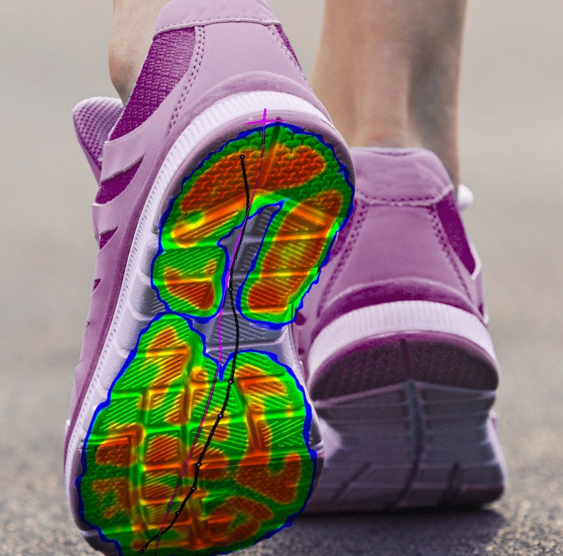
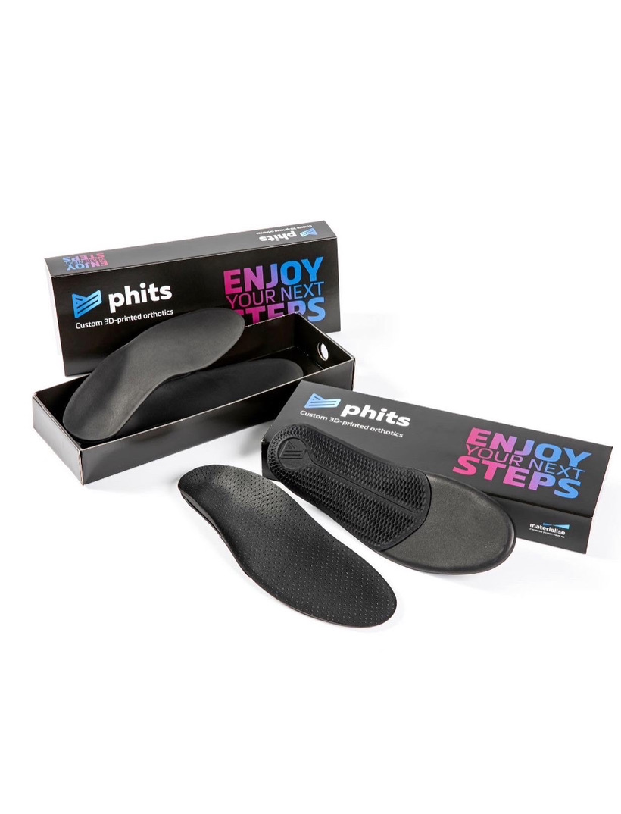
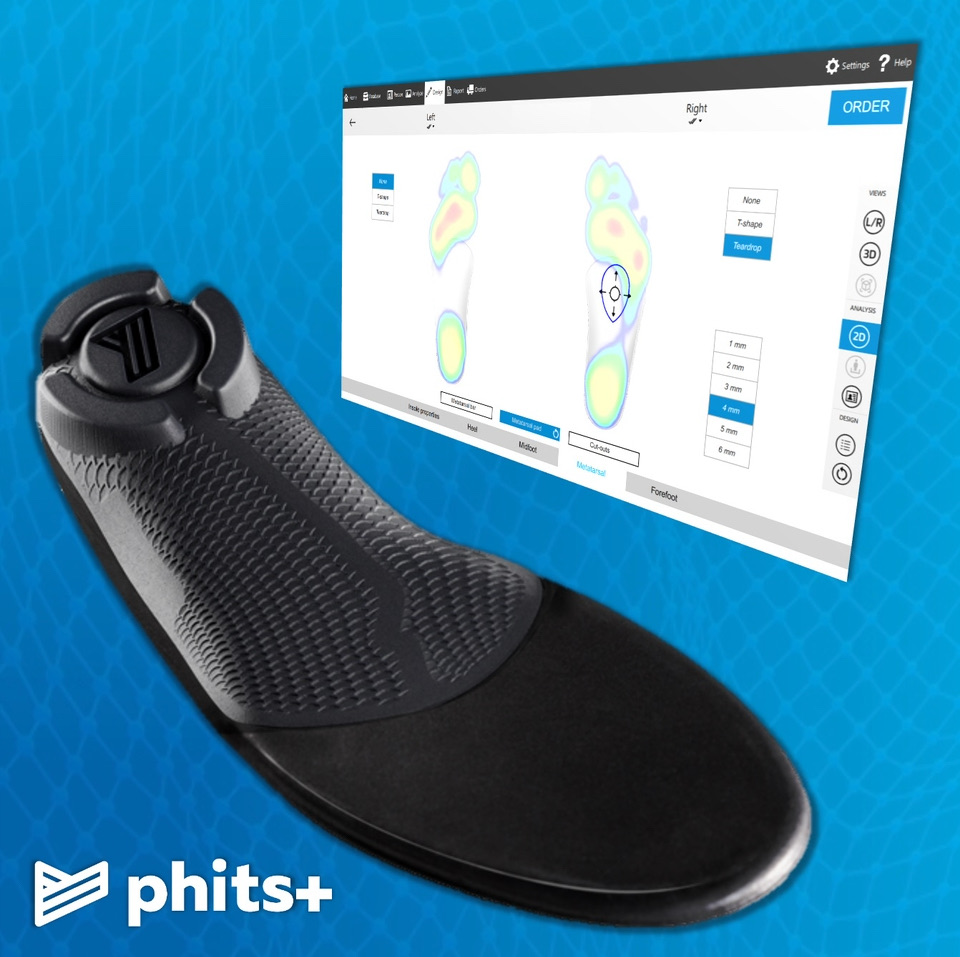

Services & Pricing
Three services, each booked separately: footscan® gait analysis, Phits 3D-printed orthotics and biomechanical assessment — here's what each involves and what it costs.
footscan® Dynamic Gait Analysis
Your Footscan appointment uses footscan® — a high-speed pressure-plate system used in biomechanics research and across hundreds of clinics throughout the UK. Unlike a standing-only measurement, it captures how your feet actually move through a full stride, revealing pressure points, timing and left/right asymmetries a static assessment would miss entirely.
- Up to 48,384 pressure sensors, capturing at up to 500 scans per second
- Maps pressure and timing through every phase of your stride, not just standing still
- Used in peer-reviewed research to help assess lower-limb injury risk
Delivered in partnership with Momentum Sports Injury Clinic
Footscan appointments are carried out via Momentum Sports Injury Clinic's own footscan® system and booking platform — £90 per session, booked separately.


Phits 3D-Printed Custom Orthotics
If your footscan® reveals a biomechanical issue that's contributing to pain, your orthotics are 3D printed as Phits insoles, designed directly from your gait data — no generic mould. Because each pair is printed rather than pressed, stiffness and support can be varied precisely across different zones of the insole to match exactly how your foot loads.
- Printed in Bluesint PA12 (100% recycled material) using 100% green energy
- Accurate to within 0.1mm, and less than half the weight of a traditional orthotic
- Finished with D3O® impact-protection material for shock absorption and comfort
- Free fitting check and adjustment within 4 weeks; exact replicas can be reprinted if needed
Delivered in partnership with Momentum Sports Injury Clinic
Phits orthotics are designed and fitted through Momentum Sports Injury Clinic's gait analysis and orthotics service — £240 per pair, booked separately. Phits is manufactured in the UK by Gait & Motion Technology Ltd.

Biomechanical Assessment
Foot problems often start higher up the chain. Our full biomechanical assessment looks at your ankles, knees, hips and lower back to understand how they influence — and are influenced by — the way you walk.
- Full lower-limb joint range and alignment check
- Muscle strength and flexibility screening
- Written report suitable for GP or physio referral
Delivered in partnership with Momentum Sports Injury Clinic
Biomechanical assessments are carried out at Momentum Sports Injury Clinic and booked as a separate appointment — £80 per session.
Simple, transparent pricing
No hidden fees. Prices shown are per session, each booked separately.
| Service | Duration | Price |
|---|---|---|
| Footscan Assessment via Momentum Sports Injury Clinic | 45 min | £90 |
| Phits Orthotics (per pair) via Momentum Sports Injury Clinic | Scan + fitting | £240 |
| Biomechanical Assessment via Momentum Sports Injury Clinic | 60 min | £80 |
Footscan Assessment, Phits Orthotics and Biomechanical Assessment are each delivered by Momentum Sports Injury Clinic and booked separately — please check Momentum's booking page for current availability and confirm pricing before publishing.
Not sure which service is right for you?
Get in touch and we'll recommend the best starting point based on your symptoms and goals.